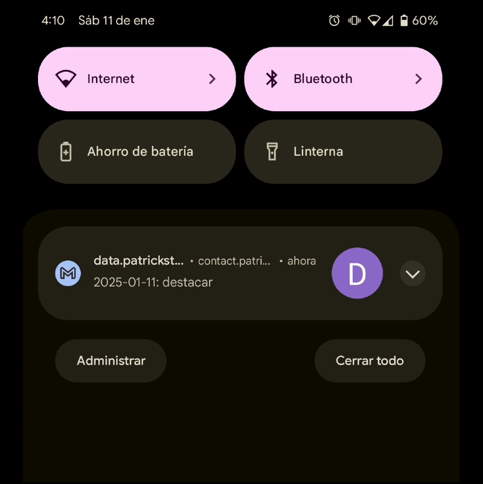

Hi, I'm Patrick Stephens
I'm a Senior Product Manager with years of experience, years working for industry leading SaaS companies, and of which have been focused on building valuable products with great teams. My product career started by solving growth problems so that our product would be visible to users searching for solutions on Google. Lately I've been solving internal discovery problems so that our solutions would be visibile to users on our platform. This includes working on Search, Recommendation and AI Assistant products. Regardless of what I'm working on, I'm always seeking to provide value to the business and its customers.
Do you need Product support?
You might have landed on this page because you haven't found a Product Manager that can help your business achieve its goals. You need a full-stack product manager. A resource who can connect with your customers to deeply understand their goals, who is comfortable exploring qualitative and quantitative data, who creates an evidence-driven strategy at the intersection of customer goals and business goals, who can paint a picture of the destination your team is moving towards, who is technical, can prototype, and enjoys building products to solve their own problems (find out how I've been learning Spanish in my spare time), and very importantly, someone who can well play with your team.
Let's talk about your product goals and how I might be the right fit to help you achieve them. Let's acquire and retain your next 10, 1k, 100k, or +1M customers. Let's build valuable products together.
Product Portfolio
Ask AI [Scribd]
Ask AI is an AI Assistant that can answer questions about the document you're viewing.


Ask AI was a 0-to-1 product launch. Our target users struggled to quickly and easily access information from our documents. Some documents contain hundreds of pages and require a significant time investment to read and find specific information. This led us to ask: "What if you didn't have to read the document to get the information you need?"
With the rise in generative AI technology our team put forward this hypothesis: If we add an AI assistant to our document page then we can reduce the time it takes to find information on our documents.
We began by validating our users' needs through product surveys. Then we put together a lo-fi design prototype for concept testing and value validation. As our confidence increased in the user value we did usability testing and iterated on our designs. Meanwhile, our team of engineers built a feasibility prototype that we used for employee dogfooding. This dogfooding exercise led us to iterate on the quality of responses before launch.
Ask AI is currently in Beta launched to a limited set of users.
Press
- Scribd Introduces Ask AI to World Subscribers in a Beta Release
- Scribd and Everand Introduce AI-Powered Discovery
Career Guide [Indeed]
Career Guide is a career content hub that provides jobseekers with advice on how to get hired.


At the time I started working on Career Guide our content team was using WordPress as their CMS. Uploading articles was a time consuming process and each article had to be uploaded one at a time. This limited the amount of content the team could get live on the site and resulted in a backlog of articles waiting to be published. This led us to ask: "What if we didn't have to upload content manually?"
Our team got together and through brainstorming we put forward this hypothesis: If we migrate from WordPress to a new CMS then we can increase the amount of content we upload to the site which will increase our SEO traffic.
We migrated from WordPress to a Gatsby framework using Strapi as a headless CMS. We also took this an opportunity to relaunch the site. In a redesign we made it easier to navigate the site so that the newly published content was accessible. The relaunch of Career Guide resulted in 100s of articles uploaded each day, increased SEO visits, and gave back time to our content team to focus on editing.
Press
Language Flash Card Emailer [Personal Product]
The Language Flash Card Emailer sends personalized flash cards to your email focused on words you struggle with.
I've been learning Spanish in my spare time. Taking classes can be expensive, time consuming, and lessons have limitations if your primary focus is extending your vocabulary. As I continue to immerse myself in Spanish through reading or listening there are often times when I come across words that I've learned before but am unable to recall their meaning. This led me to ask: "What if I could be reminded of these words that I struggle with throughout the day?"
I had been maintaining a list of words that I would come across in a Google Sheet accessible on the home screen of my phone and hypothesized: If I add a column that counts each time I've had to look up the definition of a word that I've previously experienced then I could passively test myself on those challenging words until I've memorized them.
I created a Python script that imports the data from my spreadsheet into a Pandas dataframe, expands each "Word" row by the value contained in the "Lookup Count" column, and randomly selects 1 of those rows to be used as a flashcard. The more frequently I have to lookup a word the more likely that I'll receive that word as an email flashcard. It then sends an email with the Spanish word in the subject line and the translation hidden in the body. I setup cronjobs on my computer to run the script so that I'm sent flashcards multiple times each day. The outcome has helped me focus on learning vocabulary I've struggled with and continues to help me today as I come across new vocabulary.